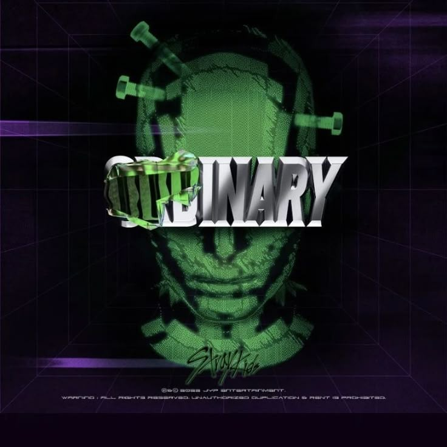

LYRIC ANALYSIS FILE
MANIAC
Stray Kids
- ALBUM
- ODDINARY
- RELEASE
- 2022.03.18
- UPDATED
- 2026.06.12
- LANGUAGE
- KOREAN
- LYRICS
- Bang Chan (3RACHA)、Changbin (3RACHA)、HAN (3RACHA)
- COMPOSED
- Bang Chan (3RACHA)、Changbin (3RACHA)、HAN (3RACHA)、VERSACHOI
02 / MEMBER IDENTIFICATION
Part Colors
03 / LYRIC DATABASE
Lyrics
ス.トゥ.レ.イ.キ.ジュ MANIAC
ス.トゥ.レ.イ.キ.ジュ MANIAC
レッツゴー
Let’s go
Let’s go
ちょんさんいん ちょっ たどぅる ひむ ちょむ ぺ
정상인 척 다들 힘 좀빼
誰もがまともに play
ちっこ いんぬん みそどぅるん っせへ
짓고 있는 미소들은 쎄해
作る笑顔はそう fake
ラッギ ぷるりみょん た っとくっかっち
Lock이 풀리면 다 똑같지
Lock しないと they're all the same
ぬぬん なる もっ そぎょ ホ
눈은 날 못 속여 ho
嘘はつけない, ho
ぼんちぇぬん ぷるりょんね
본체는 풀렸네
見える本音
ちょんしぬる かんしに ちゃぷっち
정신을 간신히 잡지
慌てずに応戦
ヤップ ヤップ
Yup, yup
応援 応援
ぬん はんぼん っかむっぱぎご バック
눈 한번 깜빡이고 back
瞬きの間に back
たし せさんい ちょんはん
다시 세상이 정한
また世の中が定めた
ちょんさんいん こすぷれ ちゅんび パウ
정상인 코스프레 준비 ppow
すぐにまともヘ戻るコスプレ, 準備, pow
マッシュ アップ マインド ブローン ちょんしぬ バック アップ
Mash up, mind blown 정신은 back up
Mash up, mind blown, 理想は back up
プロトタイプ ね うん おんじぇな フリーキー モンスター
Prototype 내 속은 언제나 freaky monster
Prototype 中身 実は freaky monster
ゆへん かとぅん ちんじょらむん ちょり ちな ロッテン
유행 같은 친절함은 철이 지나 rotten
季節外れの流行り物は rotten
ね とんすえ た しうぉなげ よけど
내 통수에 다 시원하게 욕해도
陰口は相手にも
た もくっくむ
다 먹금
しない性分
ポッピン
Poppin
Poppin
すんじなげまん ぼだが くげ たちむ
순진하게만 보다가 크게 다침
舐めてたら大怪我, yeah, we rocking
ほえが きぇそくっとぅぇみょん くぉるりいん ちゅる あね トキシッ
호의가 계속되면 권리인 줄 아네 toxic
好意に勘違いし うめぼれて, toxic
いろに とるじ ワーニング
이러니 돌지 warning
You're losing 正気, warning
マニアック
MANIAC
MANIAC
なさ っぱじん こっちょろむ みちょ マニアック
나사 빠진 것처럼 미쳐 MANIAC
壊れた様 we go crazy, maniac
ぴんぴん とらぼりげっち
핑핑 돌아버리겠지
ピンピン 吹き飛ばされる
マニアック フランケンシュタインちょろむ ころ
MANIAC Frankenstein처럼 걸어
Maniac Frankenstein の様 walking
マニアック マニアック ハハ
MANIAC MANIAC Haha
MANIAC MANIAC Haha
マニアック （オゥ）
MANIAC (Oh)
MANIAC (Oh)
なさ っぱじん こっちょろむ うそ マニアック
나사 빠진 것처럼 웃어 MANIAC
壊れた様 we laugh at it, maniac
（ユー キャント ストップ ザ スモーク）
(You can’t stop the smoke)
(You can't stop the smoke)
ぴんぴん とらぼりげっち (シック アス フォグ)
핑핑 돌아버리겠지 Thick as fog
ピンピン 吹き飛ばされる
マニアック ぴじょんさんとぅそんい ちぷったん
MANIAC 비정상투성이 집단
常識破る we're so
マニアック マニアック
MANIAC MANIAC
MANIAC MANIAC
ウィーアー マニアックス
(We’re MANIACS)
た とじん いにょん しるばぷちょろむ
다 터진 인형 실밥처럼
破れた rag doll の様
きょるぐく ぼんせぎ とぅろなじ
결국 본색이 드러나지
結局中身が出る
ぴょなじ あぬん い ライフ
편하지 않은 이 life
楽じゃない this life
イット エイント リブ イッツ ホールディング オン イェ
It ain’t “live” it’s “holding on” yeah
It ain't "live," it's "holding on," yeah
ちょんさんいん ちょく たどぅる ちょく ちょむ っぺ
정상인 척 다들 척 좀 빼
誰もがまともに play
ちっこ いんぬん みそ ノー フレッシュ へ
짓고 있는 미소 no fresh 해
作り笑顔 not so fresh
ロケット ぷるみょん たどぅる っとくっかっち
Locket 풀면 다들 똑같지
Locket ないと they're all the same
ぬぬん なる もっ そぎょ ホ
눈은 날 못 속여 ho
嘘はつけない, ho
ねが こんぬん い こりぬん た ちるぇばっ
내가 걷는 이 거리는 다 지뢰밭
Uh, 行く先まるで地雷ばかり
た おんじぇ とじるじ もるぬん ダーマント ボルケーノ
다 언제 터질지 모르는 dormant volcano
いつでも爆発 dormant volcano
やむじょねっとん ぱらむど おんじぇ ぱっくぃるじ もるら
얌전했던 바람도 언제 바뀔지 몰라
先なんか見えない すぐ変わる風向き
たどぅる すむぎん ちぇ さらが ライク ア シールド トルネード
다들 숨긴 채 살아가 like a sealed tornado
隠すみんなが like a sealed tornado
ポッピン
Poppin
Poppin
すんじなげまん ぼだが くげ たちむ
순진하게만 보다가 크게 다침
舐めてたら大怪我, yeah, we rocking
ほえが きぇそくっとぅぇみょん くぉるりいん ちゅる あね トキシッ
호의가 계속되면 권리인 줄 아네 toxic
好意に勘違いし うぬぼれて, toxic
いろに とるじ ワーニング
이러니 돌지 warning
You're losing 正気, warning
マニアック
MANIAC
MANIAC
なさ っぱじん こっちょろむ みちょ マニアック
나사 빠진 것처럼 미쳐 MANIAC
壊れた様 we go crazy, maniac
ぴんぴん とらぼりげっち
핑핑 돌아버리겠지
ピンピン 吹き飛ばされる
マニアック フランケンシュタインちょろむ ころ
MANIAC Frankenstein처럼 걸어
Maniac Frankenstein の様 walking
マニアック マニアック ハハ
MANIAC MANIAC Haha
MANIAC MANIAC Haha
マニアック (オゥ)
MANIAC (Oh)
MANIAC (Oh)
なさ っぱじん こっちょろむ うそ マニアック
나사 빠진 것처럼 웃어 MANIAC
壊れた様 we laugh at it, maniac
(ユー キャント ストップ ザ スモーク)
(You can’t stop the smoke)
(You can’t stop the smoke)
ぴんぴん とらぼりげっち (シック アス フォグ)
핑핑 돌아버리겠지 Thick as fog
ピンピン 吹き飛ばされる
マニアック ぴじょんさんとぅそんい ちぷったん
MANIAC 비정상투성이 집단
Maniac, 常識破る we're so
マニアック マニアック
MANIAC MANIAC
MANIAC MANIAC
ウィーアー マニアックス
(We’re MANIACS)
かどぅけ とぅ ぬぬん ルナティック
가득해 두 눈은 lunatic
満さ溢れる eyes, lunatic
もどぅん かむがぎ なる そ いっち
모든 감각이 날 서 있지
感性 研ぎ澄まし
いぇっぷげ ぽじゃんはん てろ めぼん かどぅぉ のうに
예쁘게 포장한 대로 매번 가둬 놓으니
その全てを包め込めるから
ふるろがだ ぼみょん きょるぐく とぅろなげっち
흘러가다 보면 결국 드러나겠지
最後には表に必ず
すむぎょじん ねみょね く もすび yeah
숨겨진 내면의 그 모습이 yeah
現れる本当の姿, yeah
マニアック
MANIAC
MANIAC
マニアック
MANIAC
MANIAC
マニアック
MANIAC
MANIAC
ユー キャンノット ストップ ウィズ ディス フィーリング
You cannot stop with this feeling
You cannot stop with this feeling
マニアック (オゥ)
MANIAC (Oh)
MANIAC (Oh)
なさ っぱじん こっちょろむ うそ マニアック
나사 빠진 것처럼 웃어 MANIAC
壊れた様 we laugh at it, maniac
(ユー キャント ストップ ザ スモーク)
(You can’t stop the smoke)
ぴんぴん とらぼりげっち (シック アス フォグ)
핑핑 돌아버리겠지 Thick as fog
ピンピン 吹き飛ばされる
マニアック ぴじょんさんとぅそんい ちぷったん
MANIAC 비정상투성이 집단
Maniac 常識破る we're so
マニアック マニアック
MANIAC MANIAC
MANIAC MANIAC
ウィーアー マニアックス
(We’re MANIACS)